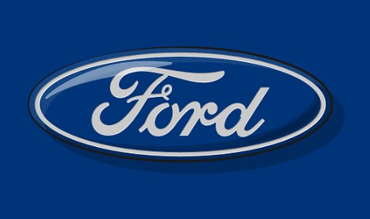
 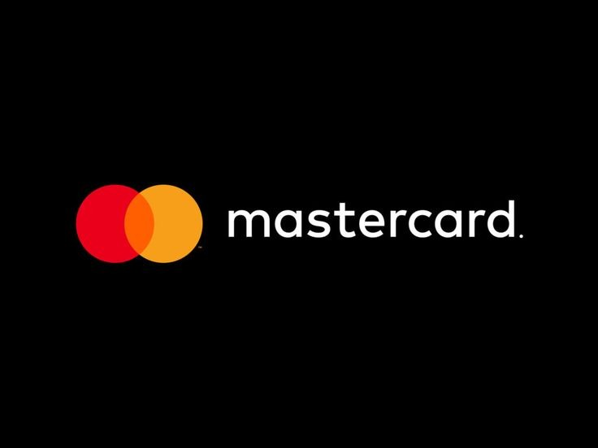
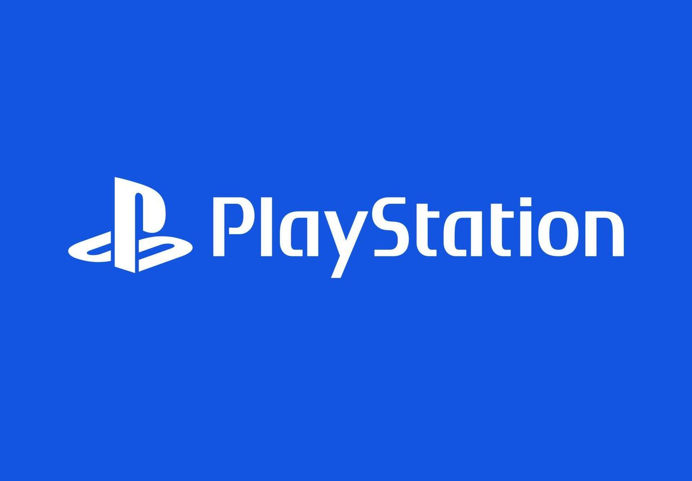
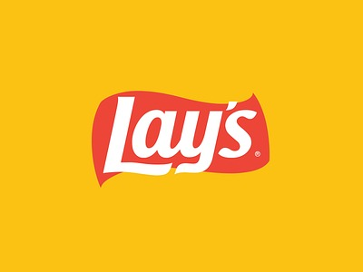
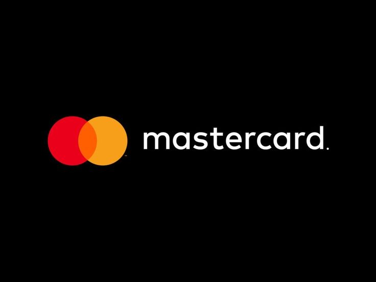
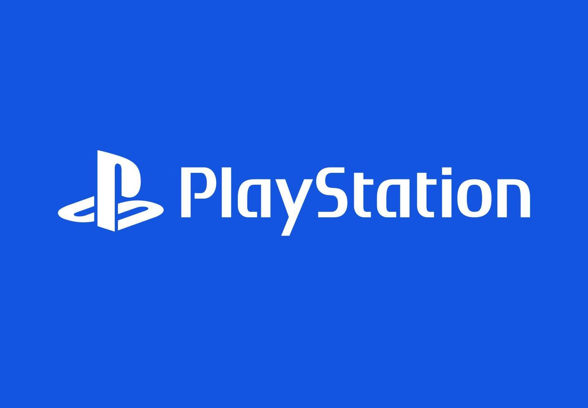
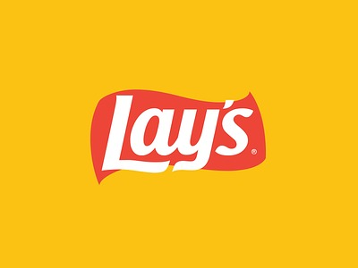
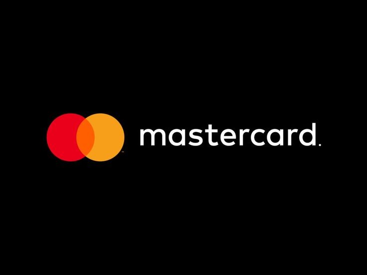
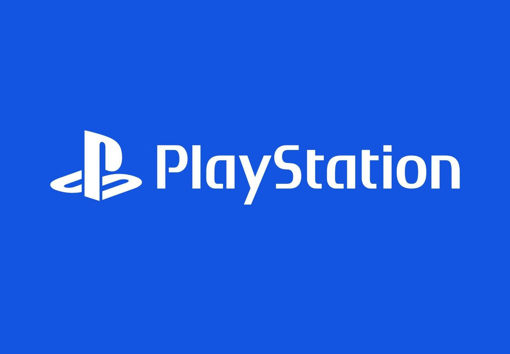
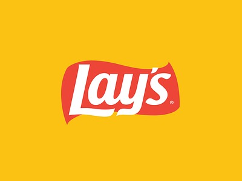
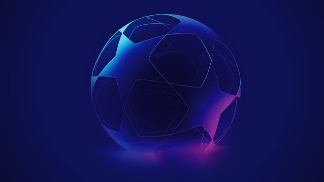
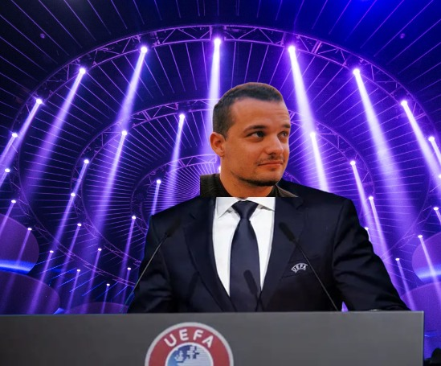
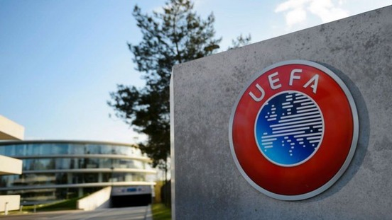

- Estos son mis primeros toques en la programación tras completar un bootcamp en Reus. Todos mis trabajos y hobbies les dedico la misma pasión y seriedad. 🧐🛠 Aportando conocimientos y aprendizaje de manera efectiva en poco tiempo. Quizá no sea el jugador franquicia de la empresa, pero si el que más ganas, flexibidad y motivación tendrá. 💪